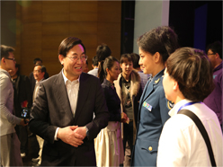

新闻
演讯
缘起—马兰花开
人物简介
1924年6月25日，邓稼先出生于安徽省怀宁县城外的邓家大屋，也叫铁砚山房的祖居内。父亲邓以蛰当时是清华大学及北京 大学文学院教授，与杨振宁父亲杨武之是多年之交 ，母亲王淑蠲，操持家务 。邓以蛰四个子女，邓稼 先排行第三，邓稼先出生 8个月以后，随母亲和两 个姐姐来到北平（即北京） ；1936年，考入北平崇德中学初中二年级，读至高 一（因抗日战争，崇德中 学在1939年停办）。这三 年，他在英文、数学、物 理方面打下了良好的基础 。在崇德中学，与高他两班的杨振宁成为好友。
共和国的脊梁——科学大师名校宣传工程
“共和国的脊梁——科学大师名校宣传工程”是由中国科协发起的科学家主题宣传活动， 旨在通过师生演校友、师弟演学长的方式，广泛宣传把自身事业追求和人生价值追求同国家富强、 社会进步、人民幸福紧密联系起来，坚持以人民利益为最高利益、以报效祖国为最高荣耀、 在创造一流科技业绩中书写人生辉煌的科学大师，塑造科技界的民族英雄，展示共和国脊梁的光辉业绩、 崇高形象，体现中华民族不会忘记、共和国不会忘记，人民不会忘记，青年不会忘记， 引导广大青少年和科技工作者自觉践行社会主义核心价值体系，把智慧和力量凝聚到为实现中华民族伟大复兴的 “中国梦”而奋斗的宏伟事业中来……
花开芳香动清华
《马兰花开》 ——两弹元勋邓稼先 马兰花开不败 57天，马兰花开 忆老邓 ——话剧《马兰花开》观后感4月26日，中国科协与教育部共同主办的“共和国的脊梁——科学大师名校宣传工程” 汇演活动在清华大学新清华学堂隆重启动。清华大学原创话剧《马兰花开》在启动仪式上首演。中共中央政治局委员、 国务院副总理刘延东出席了启动仪式并观看了《马兰花开》。演出结束后，刘延东走上舞台接见演职人员并发表了重要讲话， 对话剧的成功演出给予了高度评价。这部以讲述两弹元勋、清华大学校友邓稼先为祖国核武器事业呕心沥血、 忘我奋斗的不平凡人生的清华大学原创话剧《马兰花开》，刻画了以邓稼先为代表的参与“两弹一星”研制的科技人员 “崇高伟大的爱国精神、严谨创新的科学精神、默默无闻的奉献精神、高尚纯粹的人格魅力”。
- 

主创访谈
专访《马兰花开》主演梁植、张紫薇
学通社记者 李赞 贺冠华 发表时间：2013-04-23
从3月3日至今，整个《马兰花开》剧组已经进行了一个多月的高密度排练。近日，记者 深入剧组，对剧中的两位主要演员——饰演邓稼先的梁植及饰演邓稼先夫人许鹿希女士的张紫薇进行了采访。
话剧《马兰花开》讲述了邓稼先从8岁直到逝世的近60年间为祖国奉献的人生，因此诠释好主人公邓稼先成了话剧排练的重中之重，这对于饰演邓稼先的梁植来说无疑是个挑战。
“思考怎样能将角色诠释得更加到位是我每天唯一的事情。”梁植坦言道。早在2011年，梁植就加入剧组开始了整部剧的筹备工作。他和剧组其他成员一起阅读了大量关于邓稼先的书籍，去过邓稼先的工作单位绵阳九院进行采访，并拜访过邓稼先的妻子许鹿希女士和邓稼先的生前同事。通过这些经历，梁植加深了对邓稼先的理解和感受，“现在我们最想做的就是把最真实的邓稼先完整地呈现给大家。”
他认为自己目前最大的问题还是在表演上，“虽然我做了不少主持，但是表演上我真是差很多”。梁植也承认饰演这样一位精神境界很高的人物给他带来了不小的压力，“我们这个时代的人跟他的差距太大了。生活在这个时代的我们很难去真正理解邓稼先当时的很多选择，如面临核辐射风险时，不假思索地前往一线排除隐患，无怨无悔地为祖国奉献了自己的一生。这些在许多当代人看来可能需要艰难选择才能作出的举动在他看来是如此的自然和理所应当。”这种时代的差别是在诠释邓稼先精神过程中给整个剧组包括梁植本人最大的挑战。
谈到如何平衡学习和剧组的排练，梁植表示得益于自己的课程安排和导师的支持，“读博士一年级在课程方面没有太大的压力，我的导师也十分理解我。”
《马兰花开》也是清华大学正在开展的“行健新百年，共筑中国梦”主题教育活动的重要内容。在剧本创作讨论中，在排演过程中，参与创作和演出的同学和老师们由衷体会到，对邓稼先了解的越多越深，就越感觉到他的崇高和伟大，尽管已经很熟悉剧情，但依然经常被感动得热泪盈眶。他们去邓稼先工作过的地方采风，把邓稼先的画像挂在排练室里，在近两年的时间里，邓稼先走进了他们的生活、走进了他们的精神世界，成为了一生难忘的回忆和宝贵的财富。他们带着这份深沉的感情与邓稼先一起走上了舞台。
作为邓稼先同志的妻子，许鹿希女士对丈夫事业的理解与支持也让人动容。在本剧中饰演许鹿希的张紫薇谈到这一点也是感慨不已。“丈夫去外地工作，在哪做什么、什么时候回来全不知道，她一身挑起了家庭的重担。当邓稼先晚年拖着病体还要工作为祖国做贡献时，她也从不抱怨，只是默默地支持着丈夫。”许鹿希的深明大义是邓稼先安心工作的保障。所以即使这部剧中有关许鹿希女士的内容并不多，张紫薇依然对这个角色充满热情，因为“这个角色是邓稼先真实生活的支撑和后盾”。
正如演员们一直在强调的，他们想呈现给大家的是一部“好看”的主旋律话剧，而不是一个刻板的印象。剧中的邓稼先是一个有血有肉的人，真实而质朴，平凡而又伟大。演员们希望能够通过自己生动的表演，让更多当代人了解邓稼先，走进邓稼先崇高质朴的内心世界，接受精神洗礼。
同学感想
媒体报道
-
让科学精神直抵心灵
科学大师们虽然远去，但科学精神通过演出，变成一粒粒种子，根植于每位青年学子的心里。大学校园，春风拂面。去冬今春，从清华到...
-
话剧《马兰花开》诠释科学报国“中国梦”
讲述两弹元勋、清华大学校友邓稼先为祖国核武器事业忘我奋斗的原创话剧《马兰花开》，28日结束首轮演出。该剧由清华师生策划创作，演员均为在校学生...
-
科学大师形象登上舞台 刘延东与高校师生一同观看
“共和国的脊梁——科学大师名校宣传工程”汇演活动4月26日在京启动，中共中央政治局委员、国务院副总理刘延东与2000多名高校师生一起观看了...
 《马兰花开》讲述“两弹”元勋邓稼先的“中国梦”
《马兰花开》讲述“两弹”元勋邓稼先的“中国梦”今天，清华大学团委书记赵博做客人民网“共和国的脊梁——科学大师名校宣传工程”访谈节目时说，选择邓稼先是因为他本人的故事非常感人...
2012年3月4日剧组前往绵阳九院采风
2012年3月8日剧组前往许鹿希先生家中进行采访
2012年3月18日胡和平老师前往蒙民伟音乐厅看望剧组，并与同学们交流
胡和平与剧本创作团队5次研讨剧本修改方案
2012年8月6日
2012年9月21日
2012年11月26日
2013年1月10日
2013年1月15日
2013年1月18日剧组进行第二轮演员招募，演员阵容扩大到18人
2013年1月24日导演李欣演就位
2013年2月4日胡和平会见李欣演导演，并探讨剧目呈现
2013年2月19日胡和平老师、李欣演导演在蒙民伟楼多功能厅与演员见面，并作动员
2013年3月2日李欣演导演在工字厅东厅向学校作导演阐述
2013年3月3日清华大学原创话剧《马兰花开》剧组进驻清华大学新清华学堂排练厅，开始剧目排练， 据导演团队的要求，演员阵容扩大到28人，全部为清华大学学生
2013年3月20日清华大学学生艺术团合唱队在缪杰校友带领下赴录音棚完成主题曲的录制
2013年3月26日剧目和主题曲名称正式确定为《马兰花开》
2013年4月13日剧组在排练厅向党委书记胡和平老师作汇报联排，获充分肯定，汇报结束后， 胡和平老师再次强调了这次话剧创编排演的重要意义，并进一步指出，排演、宣传本部话剧的工作， 应当与新一阶段“行健新百年，共筑中国梦”主题教育活动紧密结合起来， 以艺术作品为载体，更好地开展育人工作
2013年4月15日剧组正式进入新清华学堂舞台，进行舞台合成与排练
2013年4月22日胡和平老师观摩了首次剧场排练
2013年4月24日剧目面向学生艺术团400名观众进行带妆联排，并进行了剧组的首演动员
2013年4月25日剧目面向全校1800名观众进行带妆联排
2013年4月26日“共和国的脊梁——科学大师名校宣传工程”汇演活动启动仪式及《马兰花开》 剧目首演在清华学堂矩形，刘延东同志、杨振宁先生等到场观看
2013年4月27日剧目面向社会公众（清华校友为主）进行招待演出
2013年4月28日剧目面向中学生进行专场演出，三场汇演及两场彩排共计覆盖观众7600人， 剧目汇演获得圆满成功
2013年5月17-19日为满足校内师生强烈需求，剧目面向校内观众演出4场，共计覆盖观众6200人， 首轮公演圆满落幕